Hier werden die Resultate der Faktorenanalysen des GISD genauer untersucht. Zusätzlich zur regulären Hauptkomponentenanalyse werden Modelle analysiert, die entweder auf GVB-, oder Kreisebene gepoolt, oder unidimensional festgesetzt sind. Es werden Eigenwerte und Faktorladungen betrachtet, sowie die Verteilung nach dem Scoring.
# Pakete laden
library(tidyverse) # Tidyverse Methoden
library(scales) # Skalierungsfunktionen
library(kableExtra) # Erweiterte (R)Markdown-Tabellen
# Skriptpfad als Arbeitspfad setzen
setwd(dirname(rstudioapi::getSourceEditorContext()$path))
# Neuestes Datenjahr und Revisionsnummer vermerken
latestyear <- 2021
currentrevision <- "2025_v1"
# Datenpfad
gisd_dir <- paste0("../Output/",currentrevision,"/")
# Dezimal-Zahlendarstellung erzwingen (Wichtig für Kennziffer-Matching)
options(scipen=999)## Generierung vorbereiten
# Jahre der Zeitreihe als Vektor notieren
allyears <- seq(1998, latestyear)
# Teildimensionen und Indikatoren notieren
dims <- tibble(Bildung = c("BeschaeftigtemitakadAbschluss_adj",
"BeschaeftigteohneAbschluss_adj",
"SchulabgaengerohneAbschluss_adj"),
Arbeitswelt = c("Arbeitslosigkeit",
"Beschaeftigtenquote",
"Bruttoverdienst_ln"),
Einkommen = c("Einkommensteuer_ln",
"Haushaltseinkommen_ln",
"Schuldnerquote"))
indicator_vars <- unname(unlist(dims))
# Indikatoren laden (adjustiert und imputiert)
Workfile_imputed <- readRDS(paste0(gisd_dir,"Zwischendaten/",
"Workfile_imputed.rds"))
# Zu Kreisebene aggregierte Version
Workfile_krs <- Workfile_imputed %>%
group_by(Kreiskennziffer, Jahr) %>%
summarise(across(all_of(indicator_vars), ~ weighted.mean(.x, Bevoelkerung))) %>%
ungroup()
## Datensatzliste zusammenbauen
# Leere Liste initialisieren
TS_List <- list()
# Pro Teildimension Zeitreihen auf Gemeinde-, GVB-, und Kreisebene generieren
for (dimension in c("Bildung", "Arbeitswelt", "Einkommen")) {
# Indikatoren der gegebenen Teildimension notieren
vars <- dims %>%
pull(dimension)
# Temporäre Liste mit Datensätzen auf den drei Gebietsebenen konstruieren
temp_list <- list(
gem = Workfile_imputed %>% # Rohe Scores auf Gemeindeebene
filter(Jahr > (latestyear - 20)) %>%
select(all_of(vars)),
gvb = Workfile_imputed %>% # Bevölkerungsgewichtete Aggregation auf GVB-Ebene
filter(Jahr > (latestyear - 20)) %>%
group_by(GVBKennziffer, Jahr) %>%
summarise(across(all_of(vars), ~ weighted.mean(.x, Bevoelkerung))) %>%
ungroup() %>%
select(all_of(vars)),
krs = Workfile_imputed %>% # Bevölkerungsgewichtete Aggregation auf Kreisebene
filter(Jahr > (latestyear - 20)) %>%
group_by(Kreiskennziffer, Jahr) %>%
summarise(across(all_of(vars), ~ weighted.mean(.x, Bevoelkerung))) %>%
ungroup() %>%
select(all_of(vars))
)
# Listenelemente (Datensätze) umbenennen
names(temp_list) <- c(paste0("TS_",dimension,"_Gemeinde"),
paste0("TS_",dimension,"_GVB"),
paste0("TS_",dimension,"_Kreis"))
# Temporäre Liste an volle Datensatzliste anfügen
TS_List <- append(TS_List, temp_list)
}
rm(dimension, dims, vars, temp_list)
# Weitere Zeitreihen manuell ergänzen
TS_List <- TS_List %>%
append(list(
# Gemeindeebene Unidimensional
TS_Uni = Workfile_imputed %>%
filter(Jahr > (latestyear - 20)) %>%
select(all_of(indicator_vars))
)
)
# # Beispielcodes, um individuelle Datensätze zu ziehen
# TS_List[["TS_Arbeitswelt_Gemeinde"]]
# TS_List$TS_Arbeitswelt_Gemeinde
## PCA-Liste generieren
# Iterativ prcomp auf jeden einzelnen Datensatz der Datensatz-Liste anwenden
PCA_List <- lapply(TS_List,
function(df) {
prcomp(df,
center = TRUE, scale. = TRUE, retx = TRUE,
rank. = 1)
}
)
# # Beispielcode, um individuelle PCA-Ergebnisse zu ziehen
# PCA_List[["TS_Arbeitswelt_Gemeinde"]]
# PCA_List$TS_Arbeitswelt_Gemeinde
# PCA_List$TS_Arbeitswelt_Gemeinde$rotationEs werden Hauptkomponentenanalysen für jede der drei Teildimensionen auf Basis der imputierten Daten geschätzt und untersucht.
# PCA analog zum Hauptskript
TS_Bildung.pca <- prcomp(TS_List[["TS_Bildung_Gemeinde"]],
center = TRUE, scale. = TRUE, retx = TRUE,
rank. = 1)
TS_Arbeitswelt.pca <- prcomp(TS_List[["TS_Arbeitswelt_Gemeinde"]],
center = TRUE, scale. = TRUE, retx = TRUE,
rank. = 1)
TS_Einkommen.pca <- prcomp(TS_List[["TS_Einkommen_Gemeinde"]],
center = TRUE, scale. = TRUE, retx = TRUE,
rank. = 1)# Eigenwerte-Datensatz konstruieren
eigenvalues_long <- tibble(Faktor = rep(c("1", "2", "3"),
times = 3),
Dimension = rep(c("Bildung", "Arbeitswelt", "Einkommen"),
each = 3),
Eigenwert = c(TS_Bildung.pca$sdev^2,
TS_Arbeitswelt.pca$sdev^2,
TS_Einkommen.pca$sdev^2)) %>%
# "Reihenfolge" beim Facet-Wrapping erzwingen anhand von fake Ordinalskalierung
mutate(Dimension = as_factor(Dimension))
# Plot-Theme festlegen
theme_set(theme_minimal())
# Balkendiagramm plotten
ggplot(eigenvalues_long,
aes(x = Faktor, y = Eigenwert, fill = Dimension)) +
geom_hline(yintercept = 1, linetype = "dashed", color = "grey25") +
geom_bar(stat = "identity") +
facet_wrap(~ Dimension,
ncol = 3) +
theme(panel.grid.major.x = element_blank(), #Keine vertikalen Linien
panel.grid = element_line(linetype = "dashed"),
axis.text.x = element_text(vjust = 5)) +
guides(fill = "none") # Legende entfernen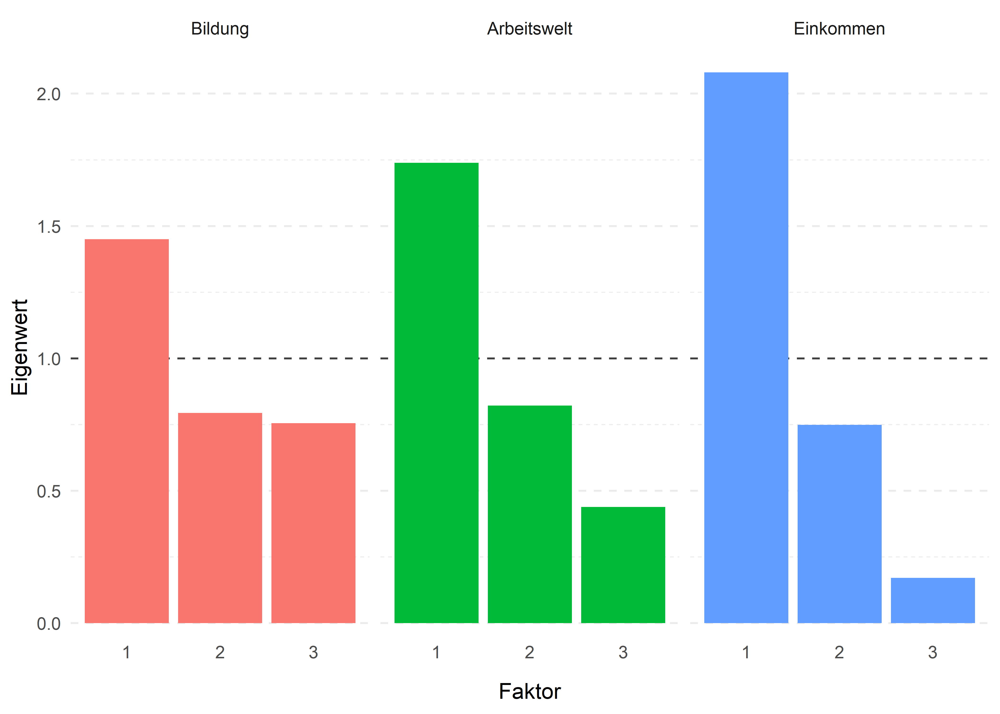
Figure 1: Eigenwerte der drei Teildimensionen
# Funktion, um Faktorladung zu ziehen
get_ladung <- function(dfname) {
df <- PCA_List[[dfname]]
ladung <- as.numeric(df$rotation * df$sdev[1])
return(ladung * -1) # Vorzeichen tauschen um "Deprivation" abzubilden
}
# Formatierte Basistabelle konstruieren
table_base <- tibble(
Indikator = c("Beschäftigte mit akad. Abschluss (adj.)",
"Beschäftigte ohne Abschluss (adj.)",
"Schulabgänger ohne Abschluss (adj.)",
"Arbeitslosigkeit",
"Beschäftigtenquote",
"Bruttoverdienst (log.)",
"Einkommensteuer (log.)",
"Haushaltseinkommen (log.)",
"Schuldnerquote"),
Dimension = rep(c("Bildung", "Arbeitswelt", "Einkommen"),
each = 3)
)
# Komponente berechnen analog zum Hauptskript
table_ladungen <- table_base %>%
mutate(
# Ladung = Rotation * Standardabweichung
Faktorladung = c(
get_ladung("TS_Bildung_Gemeinde"),
get_ladung("TS_Arbeitswelt_Gemeinde"),
get_ladung("TS_Einkommen_Gemeinde")
),
# Anteil = Rotation ^ 2
`Anteil am Teilscore` = c(
PCA_List$TS_Bildung_Gemeinde$rotation^2,
PCA_List$TS_Arbeitswelt_Gemeinde$rotation^2,
PCA_List$TS_Einkommen_Gemeinde$rotation^2
) * 100, # Mal 100 für Tabelle
# Anteil GISD = Anteil / 3
`Anteil am GISD` = `Anteil am Teilscore` / 3
)
# Tabelle in HTML printen
kbl(table_ladungen,
caption = "Faktorladungen und Anteile an den Teilscores sowie am gesamten Index",
digits = 2) %>%
kable_styling()| Indikator | Dimension | Faktorladung | Anteil am Teilscore | Anteil am GISD |
|---|---|---|---|---|
| Beschäftigte mit akad. Abschluss (adj.) | Bildung | -0.71 | 34.32 | 11.44 |
| Beschäftigte ohne Abschluss (adj.) | Bildung | 0.71 | 34.31 | 11.44 |
| Schulabgänger ohne Abschluss (adj.) | Bildung | 0.67 | 31.37 | 10.46 |
| Arbeitslosigkeit | Arbeitswelt | 0.83 | 39.51 | 13.17 |
| Beschäftigtenquote | Arbeitswelt | -0.58 | 19.54 | 6.51 |
| Bruttoverdienst (log.) | Arbeitswelt | -0.84 | 40.94 | 13.65 |
| Einkommensteuer (log.) | Einkommen | -0.92 | 40.32 | 13.44 |
| Haushaltseinkommen (log.) | Einkommen | -0.92 | 40.80 | 13.60 |
| Schuldnerquote | Einkommen | 0.63 | 18.88 | 6.29 |
Hier werden Hauptkomponentenanalysen an unterschiedlichen Datensätzen untersucht: roh auf Gemeindeebene, regional aggregiert auf GVB- und Kreisebene sowie unidimensional auf Gemeindeebene.
# Tabelle konstruieren
table_ebenen <- table_base %>%
mutate(Gemeinde = c(get_ladung("TS_Bildung_Gemeinde"),
get_ladung("TS_Arbeitswelt_Gemeinde"),
get_ladung("TS_Einkommen_Gemeinde")),
GVB = c(get_ladung("TS_Bildung_GVB"),
get_ladung("TS_Arbeitswelt_GVB"),
get_ladung("TS_Einkommen_GVB")),
Kreis = c(get_ladung("TS_Bildung_Kreis"),
get_ladung("TS_Arbeitswelt_Kreis"),
get_ladung("TS_Einkommen_Kreis")))
# Tabelle in HTML printen
kbl(table_ebenen,
caption = "Faktorladungen auf Gemeinde-, Gemeindeverbands- und Kreisebene",
digits = 2) %>%
kable_styling()| Indikator | Dimension | Gemeinde | GVB | Kreis |
|---|---|---|---|---|
| Beschäftigte mit akad. Abschluss (adj.) | Bildung | -0.71 | -0.69 | -0.58 |
| Beschäftigte ohne Abschluss (adj.) | Bildung | 0.71 | 0.72 | 0.64 |
| Schulabgänger ohne Abschluss (adj.) | Bildung | 0.67 | 0.73 | 0.78 |
| Arbeitslosigkeit | Arbeitswelt | 0.83 | 0.86 | 0.85 |
| Beschäftigtenquote | Arbeitswelt | -0.58 | -0.65 | -0.76 |
| Bruttoverdienst (log.) | Arbeitswelt | -0.84 | -0.81 | -0.67 |
| Einkommensteuer (log.) | Einkommen | -0.92 | -0.90 | -0.89 |
| Haushaltseinkommen (log.) | Einkommen | -0.92 | -0.92 | -0.94 |
| Schuldnerquote | Einkommen | 0.63 | 0.65 | 0.63 |
# Tabelle konstruieren
table_uni <- table_base %>%
mutate(Dimension = "Unidimensional",
Faktorladung = get_ladung("TS_Uni"))
# Tabelle in HTML printen
kbl(table_uni,
caption = "Faktorladungen (Unidimensional)",
digits = 2) %>%
kable_styling(full_width = F) # Schmale Tabelle| Indikator | Dimension | Faktorladung |
|---|---|---|
| Beschäftigte mit akad. Abschluss (adj.) | Unidimensional | -0.50 |
| Beschäftigte ohne Abschluss (adj.) | Unidimensional | 0.35 |
| Schulabgänger ohne Abschluss (adj.) | Unidimensional | 0.68 |
| Arbeitslosigkeit | Unidimensional | 0.85 |
| Beschäftigtenquote | Unidimensional | -0.44 |
| Bruttoverdienst (log.) | Unidimensional | -0.78 |
| Einkommensteuer (log.) | Unidimensional | -0.90 |
| Haushaltseinkommen (log.) | Unidimensional | -0.90 |
| Schuldnerquote | Unidimensional | 0.57 |
Es werden Hauptkomponentenanalysen für jede der drei Teildimensionen geschätzt und untersucht, hier mit jeweils nur einem Datenjahr.
## Datensatzliste zusammenbauen
# Leere Liste initialisieren
TS_List_yearly <- list()
# Über Datenjahre loopen und pro Jahr und Dimension einen Datensatz in Liste eintragen
for (year in allyears) {
# Liste mit Datensätzen auf den drei Dimensionen konstruieren
temp_list <- list(
b = Workfile_imputed %>%
filter(Jahr == year) %>%
select(BeschaeftigtemitakadAbschluss_adj,
BeschaeftigteohneAbschluss_adj,
SchulabgaengerohneAbschluss_adj),
a = Workfile_imputed %>%
filter(Jahr == year) %>%
select(Arbeitslosigkeit,
Beschaeftigtenquote,
Bruttoverdienst_ln),
e = Workfile_imputed %>%
filter(Jahr == year) %>%
select(Einkommensteuer_ln,
Haushaltseinkommen_ln,
Schuldnerquote)
)
# Listenelemente (Datensätze) umbenennen
names(temp_list) <- c(paste0("TS_Bildung_",year),
paste0("TS_Arbeitswelt_",year),
paste0("TS_Einkommen_",year))
# Temporäre Liste an volle Datensatzliste anfügen
TS_List_yearly <- append(TS_List_yearly,
temp_list)
}
# Kreisebene zur Liste hinzufügen
for (year in allyears) {
# Liste mit Datensätzen auf den drei Dimensionen konstruieren
# Diesmal mit Indikatoren auf Kreisebene
temp_list <- list(
b = Workfile_krs %>%
filter(Jahr == year) %>%
select(BeschaeftigtemitakadAbschluss_adj,
BeschaeftigteohneAbschluss_adj,
SchulabgaengerohneAbschluss_adj),
a = Workfile_krs %>%
filter(Jahr == year) %>%
select(Arbeitslosigkeit,
Beschaeftigtenquote,
Bruttoverdienst_ln),
e = Workfile_krs %>%
filter(Jahr == year) %>%
select(Einkommensteuer_ln,
Haushaltseinkommen_ln,
Schuldnerquote)
)
# Listenelemente (Datensätze) umbenennen
names(temp_list) <- c(paste0("TS_Bildung_",year,"_Kreis"),
paste0("TS_Arbeitswelt_",year,"_Kreis"),
paste0("TS_Einkommen_",year,"_Kreis"))
# Temporäre Liste an volle Datensatzliste anfügen
TS_List_yearly <- append(TS_List_yearly,
temp_list)
}
# # Beispielcodes, um individuelle Datensätze zu ziehen
# TS_List_yearly[["TS_Bildung_2000"]]
# TS_List_yearly$TS_Bildung_2000
## PCA-Liste generieren
# Iterativ prcomp auf jeden einzelnen Datensatz der Datensatz-Liste anwenden
PCA_List_yearly <- lapply(TS_List_yearly,
function(df) {
prcomp(df,
center = TRUE, scale. = TRUE, retx = TRUE,
rank. = 1)
}
)
# # Beispielcode, um individuelle PCA-Ergebnisse zu ziehen
# PCA_List_yearly[["TS_Bildung_2000"]]
# PCA_List_yearly$TS_Bildung_2000
# PCA_List_yearly$TS_Bildung_2000$rotation
rm(year, temp_list)# Funktion, um sich die jährlichen Eigenwerte des n-ten Faktors für jede Dimension aus der jährlichen PCA-Liste zu ziehen
get_eigenvalues_yearly <- function(factor) {
# Leeren Vektor initialisieren
values <- c()
# Über Jahre und Dimensionen loopen und Eigenwert berechnen
for (year in allyears) {
for (dimension in c("Bildung", "Arbeitswelt", "Einkommen")) {
# PCA aus Liste ziehen
df <- PCA_List_yearly[[paste0("TS_",dimension,"_",year)]]
# Vektor um Eigenwert des n-ten Faktors erweitern
values <- c(values, df$sdev[factor]^2)
}
}
# Vollständigen Vektor zurückgeben
return(values)
}
# Datensatz mit Eigenwerten konstruieren
eigenvalues_yearly <- tibble(Jahr = rep(allyears,
each = 3),
Dimension = rep(c("Bildung", "Arbeitswelt", "Einkommen"),
times = length(allyears)),
Faktor1 = get_eigenvalues_yearly(1),
Faktor2 = get_eigenvalues_yearly(2)) %>%
pivot_longer(cols = starts_with("Faktor"),
names_to = "Faktor",
values_to = "Eigenwert") %>%
# "Reihenfolge" bei Farb-Zuordnung erzwingen anhand von fake Ordinalskalierung
mutate(Dimension = as_factor(Dimension))
# Plotübergreifende Komponente
plot_components <- list(
# x-Achse als Zeitreihe in 1er-Schritten
scale_x_continuous(breaks = seq(1998, latestyear, by = 1),
minor_breaks = NULL),
# X-Achsen-Labels schräg anzeigen
theme(axis.text.x = element_text(angle = 45, vjust = 0.5)),
# Legenden-Icons sichtbarer machen
guides(color=guide_legend(override.aes=list(linewidth=1.5)))
)
# Eigenwerte plotten
ggplot(eigenvalues_yearly) +
geom_line(aes(x = Jahr, y = Eigenwert, color = Dimension),
linewidth = 0.8) +
# Über Faktoren facettieren
facet_wrap(~ Faktor, ncol = 1,
strip.position = "right",
scales = "free") +
plot_components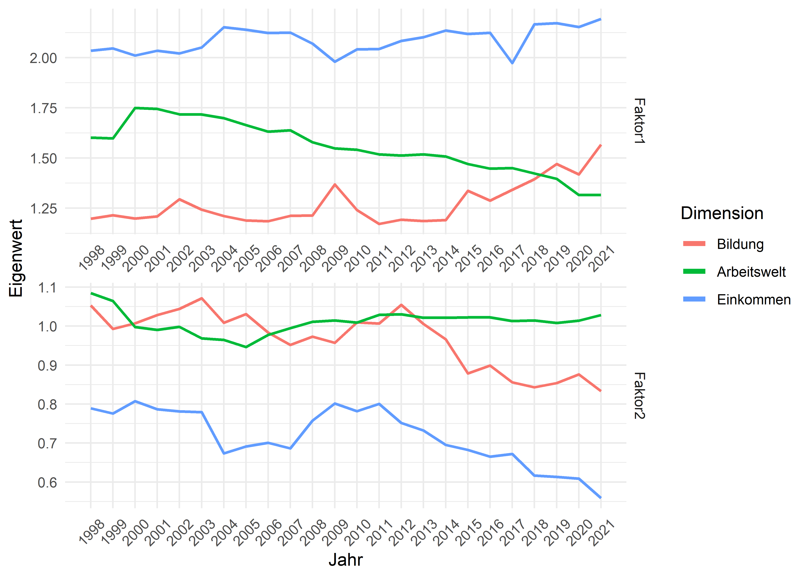
Figure 2: Eigenwerte der drei Teildimensionen (jahresweise PCA)
# Funktion, um sich die jährlichen Eigenwerte des n-ten Faktors für jede Dimension aus der jährlichen PCA-Liste zu ziehen
get_eigenvalues_yearly_kreis <- function(factor) {
# Leeren Vektor initialisieren
values <- c()
# Über Jahre und Dimensionen loopen und Eigenwert berechnen
for (year in allyears) {
for (dimension in c("Bildung", "Arbeitswelt", "Einkommen")) {
# PCA aus Liste ziehen
df <- PCA_List_yearly[[paste0("TS_",dimension,"_",year,"_Kreis")]]
# Vektor mit n-ten Eigenwert erweitern
values <- c(values, df$sdev[factor]^2)
}
}
# Vollständigen Vektor zurückgeben
return(values)
}
# Datensatz mit Eigenwerten konstruieren
eigenvalues_yearly_kreis <- tibble(Jahr = rep(allyears,
each = 3),
Dimension = rep(c("Bildung", "Arbeitswelt", "Einkommen"),
times = length(allyears)),
Faktor1 = get_eigenvalues_yearly_kreis(1),
Faktor2 = get_eigenvalues_yearly_kreis(2)) %>%
pivot_longer(cols = starts_with("Faktor"),
names_to = "Faktor",
values_to = "Eigenwert") %>%
# "Reihenfolge" bei Farb-Zuordnung erzwingen anhand von fake Ordinalskalierung
mutate(Dimension = as_factor(Dimension))
# Eigenwerte plotten
ggplot(eigenvalues_yearly_kreis,
aes(x = Jahr, y = Eigenwert, color = Dimension)) +
geom_line(linewidth = 0.8) +
# Über Faktoren facettieren
facet_wrap(~ Faktor, ncol = 1,
strip.position = "right",
scales = "free") +
plot_components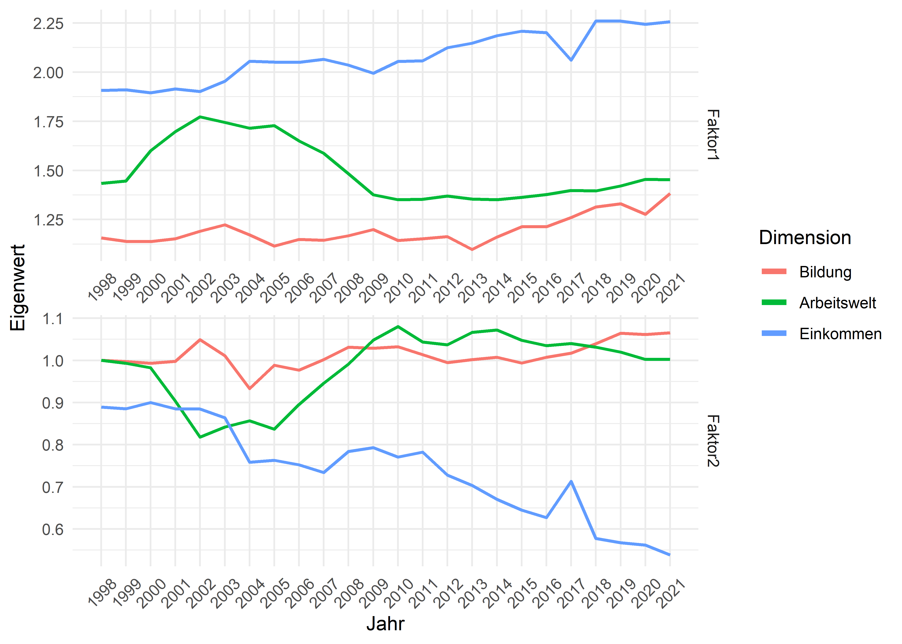
Figure 3: Eigenwerte der drei Teildimensionen (jahresweise PCA, Rohdaten zu Kreisebene hochaggregiert)
# Funktion, um Faktorladung zu berechnen (jahresweise)
get_ladung_yearly <- function(dfname) {
df <- PCA_List_yearly[[dfname]]
return(df$rotation * df$sdev[1])
}
# Tabelle initialisieren
table_yearly <- table_base
# Über jedes Jahr loopen und Faktorladung der Indikatoren berechnen
for (year in allyears) {
# Tabelle um Datenjahr-Spalte erweitern
table_yearly[[paste0(year)]] <- c(get_ladung_yearly(paste0("TS_Bildung_", year)),
get_ladung_yearly(paste0("TS_Arbeitswelt_", year)),
get_ladung_yearly(paste0("TS_Einkommen_", year)))
}
rm(year)
# # Tabelle in HTML printen
# kbl(table_yearly,
# caption = "Faktorladungen der Indikatoren pro Datenjahr",
# digits = 2) %>%
# kable_styling() %>%
# # HTML-Scrollbox weil Tabelle zu breit
# scroll_box(width = "100%")
## Plotten
# Datensatz auf long reshapen
ladungen_yearly_long <- table_yearly %>%
pivot_longer(cols = c(paste0(allyears)),
names_to = "Jahr",
values_to = "Ladung") %>%
# Variablen für Plot formatieren
mutate(Jahr = as.numeric(Jahr),
Dimension = as_factor(Dimension),
Indikator = as_factor(Indikator),
# Betrag der Ladung nehmen (weil manchmal Vorzeichen wechseln)
Ladung = abs(Ladung))
# Aus Regenbogen 9 Farben ziehen
ind_colors <- scales::hue_pal()(9)
# Palette anpassen
ind_colors[4] <- "#82BA00"
ind_colors[5] <- "#0AC37C"
ind_colors[9] <- "#FF3F72"
# Plotübergreifende Komponente
plot_components_ladung <- append(plot_components,
scale_y_continuous(breaks = seq(0, 1, by = 0.2),
limits = c(0, 1)))ggplot(filter(ladungen_yearly_long, Dimension == "Bildung"),
aes(x = Jahr, y = Ladung, group = Indikator, color = Indikator)) +
geom_line(linewidth = 0.8) +
plot_components_ladung +
ylab("Jahresweise Faktorladung (Bildung)") +
scale_color_manual(values = c(ind_colors[1:3]),
labels = c("Beschäftigte \nmit akad. \nAbschluss (adj.)\n",
"Beschäftigte \nohne \nAbschluss (adj.)\n",
"Schulabgänger \nohne \nAbschluss (adj.)"))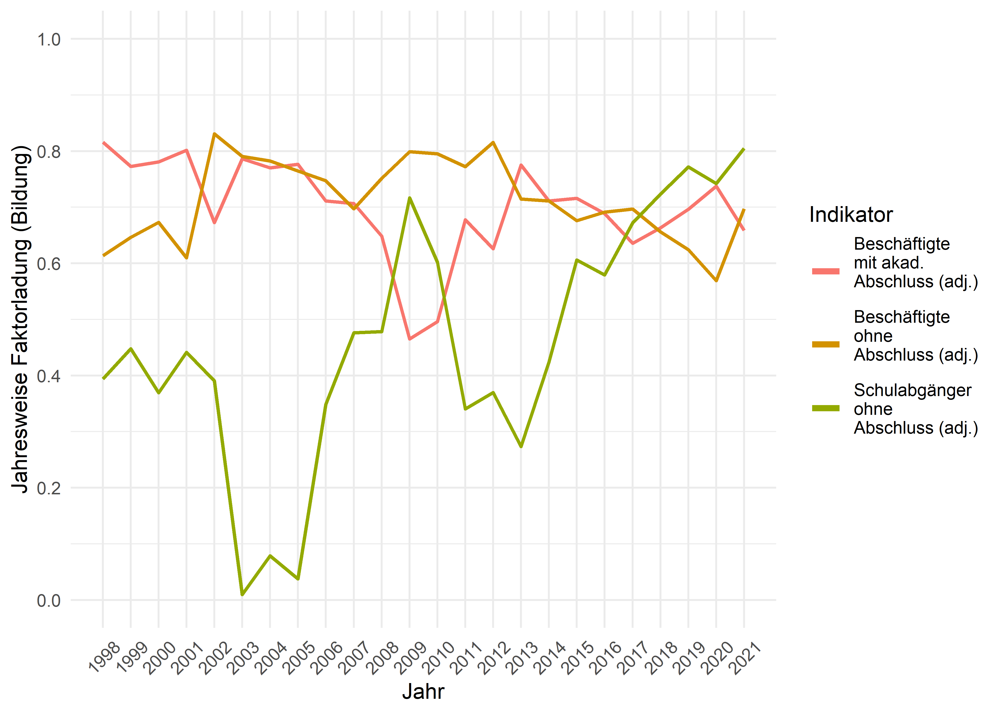
ggplot(filter(ladungen_yearly_long, Dimension == "Arbeitswelt"),
aes(x = Jahr, y = Ladung, group = Indikator, color = Indikator)) +
geom_line(linewidth = 0.8) +
plot_components_ladung +
ylab("Jahresweise Faktorladung (Arbeitswelt)") +
scale_color_manual(values = c(ind_colors[4:6]))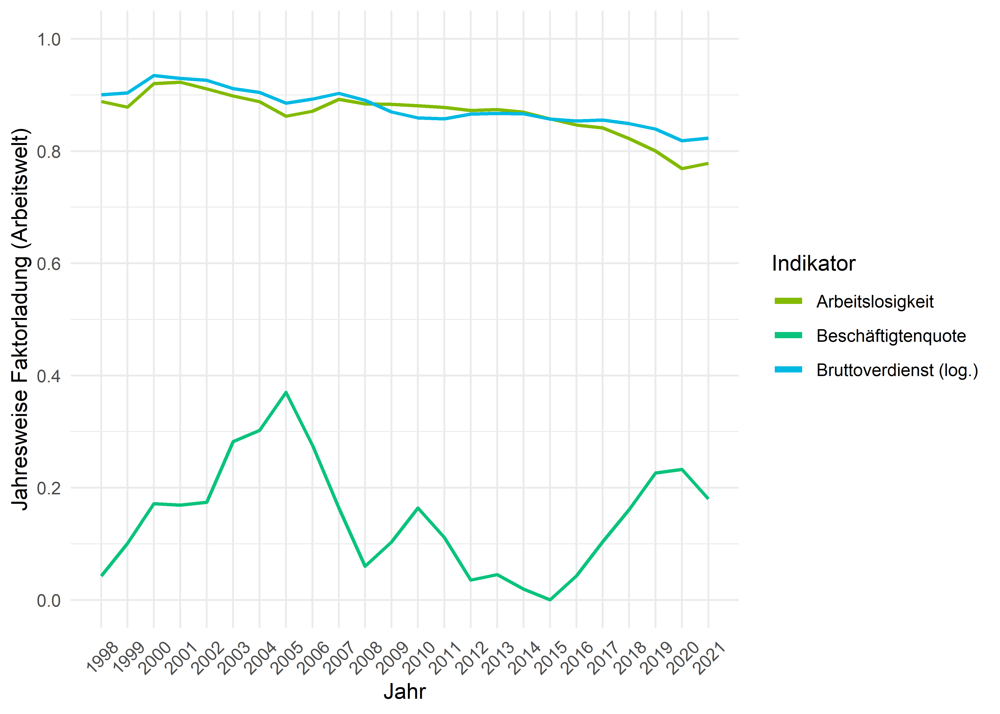
ggplot(filter(ladungen_yearly_long, Dimension == "Einkommen"),
aes(x = Jahr, y = Ladung, group = Indikator, color = Indikator)) +
geom_line(linewidth = 0.8) +
plot_components_ladung +
ylab("Jahresweise Faktorladung (Einkommen)") +
scale_color_manual(values = c(ind_colors[7:9]),
labels = c("Einkommen- \nsteuer (log.)\n",
"Haushalts- \neinkommen (.log)\n",
"Schuldnerquote"))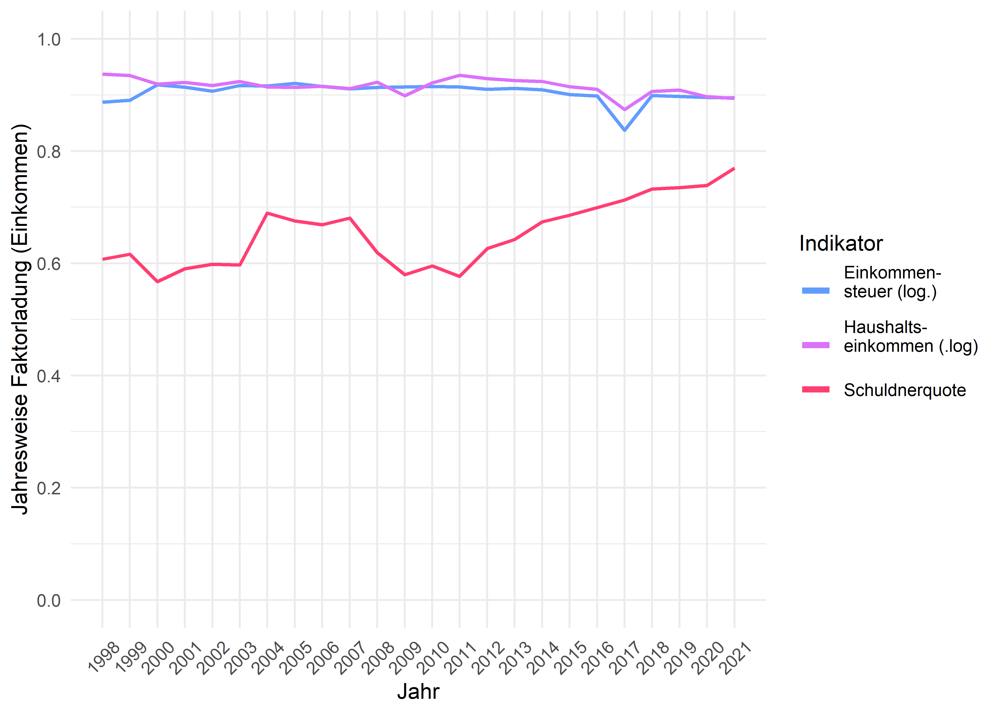
# Tabelle initialisieren
table_yearly <- table_base
# Über jedes Jahr loopen und Faktorladung der Indikatoren berechnen
for (year in allyears) {
# Tabelle um Datenjahr-Spalte erweitern
table_yearly[[paste0(year)]] <- c(get_ladung_yearly(paste0("TS_Bildung_",year,"_Kreis")),
get_ladung_yearly(paste0("TS_Arbeitswelt_",year,"_Kreis")),
get_ladung_yearly(paste0("TS_Einkommen_",year,"_Kreis")))
}
rm(year)
## Plotten
# Datensatz auf long reshapen
ladungen_yearly_long <- table_yearly %>%
pivot_longer(cols = c(paste0(allyears)),
names_to = "Jahr",
values_to = "Ladung") %>%
# Variablen für Plot formatieren
mutate(Jahr = as.numeric(Jahr),
Dimension = as_factor(Dimension),
Indikator = as_factor(Indikator),
# Betrag der Ladung nehmen (weil manchmal Vorzeichen wechseln)
Ladung = abs(Ladung))
# Aus Regenbogen 9 Farben ziehen
ind_colors <- scales::hue_pal()(9)
# Palette anpassen
ind_colors[4] <- "#82BA00"
ind_colors[5] <- "#0AC37C"
ind_colors[9] <- "#FF3F72"
# Plotübergreifende Komponente
plot_components_ladung <- append(plot_components,
scale_y_continuous(breaks = seq(0, 1, by = 0.2),
limits = c(0, 1)))ggplot(filter(ladungen_yearly_long, Dimension == "Bildung"),
aes(x = Jahr, y = Ladung, group = Indikator, color = Indikator)) +
geom_line(linewidth = 0.8) +
plot_components_ladung +
ylab("Jahresweise Faktorladung (Bildung)") +
scale_color_manual(values = c(ind_colors[1:3]),
labels = c("Beschäftigte \nmit akad. \nAbschluss (adj.)\n",
"Beschäftigte \nohne \nAbschluss (adj.)\n",
"Schulabgänger \nohne \nAbschluss (adj.)"))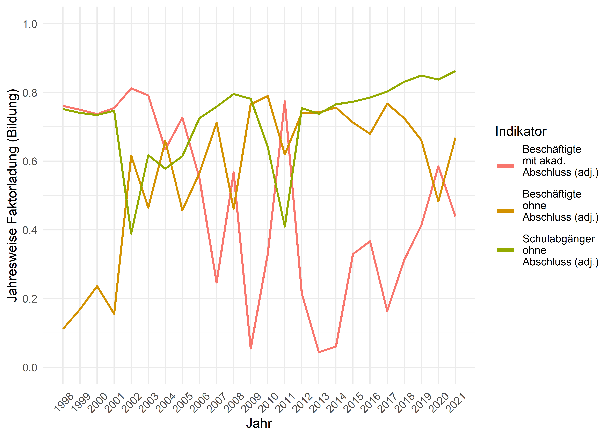
ggplot(filter(ladungen_yearly_long, Dimension == "Arbeitswelt"),
aes(x = Jahr, y = Ladung, group = Indikator, color = Indikator)) +
geom_line(linewidth = 0.8) +
plot_components_ladung +
ylab("Jahresweise Faktorladung (Arbeitswelt)") +
scale_color_manual(values = c(ind_colors[4:6]))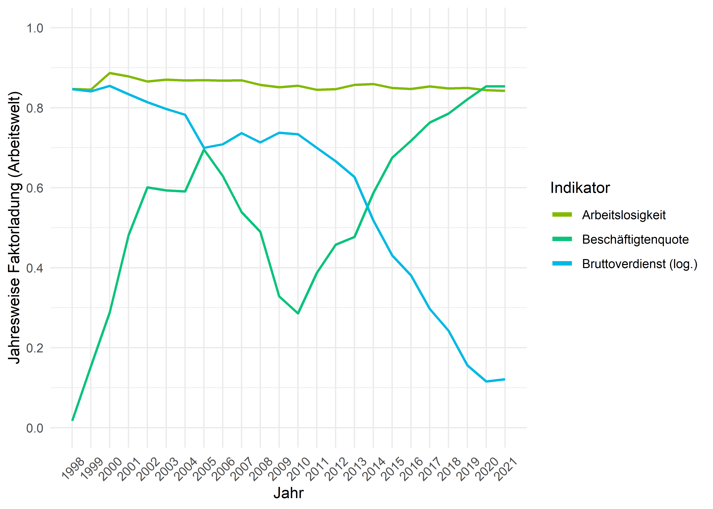
ggplot(filter(ladungen_yearly_long, Dimension == "Einkommen"),
aes(x = Jahr, y = Ladung, group = Indikator, color = Indikator)) +
geom_line(linewidth = 0.8) +
plot_components_ladung +
ylab("Jahresweise Faktorladung (Einkommen)") +
scale_color_manual(values = c(ind_colors[7:9]),
labels = c("Einkommen- \nsteuer (log.)\n",
"Haushalts- \neinkommen (.log)\n",
"Schuldnerquote"))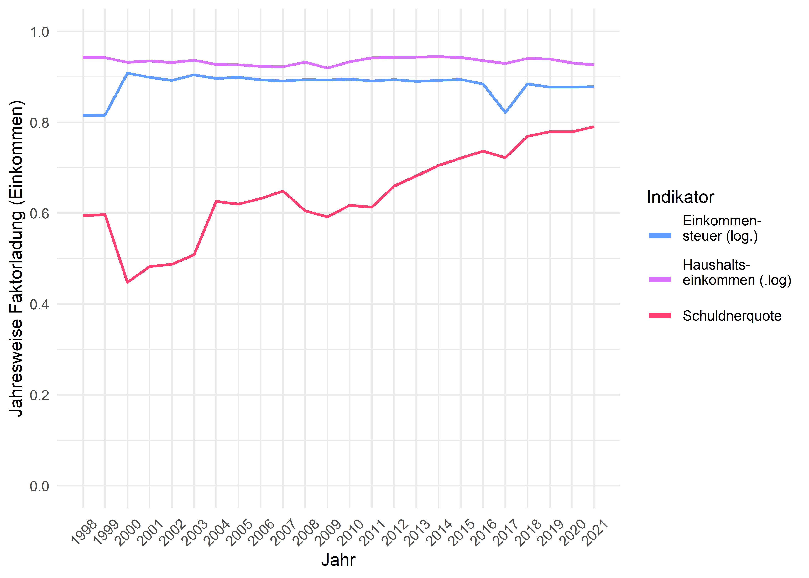
Es werden die Dichteverteilungen der Sub- und Gesamtscores untersucht, sowie der Effekt der Normalisierung darauf. Zusätzlich wird zwischen Scores aus der regulären PCA und einer PCA mit nur dem letzten Datenjahr verglichen.
# Prediction der Scores
Results_raw <- Workfile_imputed %>%
mutate(
# Reguläre PCA (letzte 20 Jahre)
TS_Bildung_raw = predict(PCA_List[["TS_Bildung_Gemeinde"]], newdata = Workfile_imputed),
TS_Arbeitswelt_raw = predict(PCA_List[["TS_Arbeitswelt_Gemeinde"]], newdata = Workfile_imputed),
TS_Einkommen_raw = predict(PCA_List[["TS_Einkommen_Gemeinde"]], newdata = Workfile_imputed),
# PCA aus nur dem letztem Datenjahr
TS_Bildung_l = predict(PCA_List_yearly[[paste0("TS_Bildung_",latestyear)]], newdata = Workfile_imputed),
TS_Arbeitswelt_l = predict(PCA_List_yearly[[paste0("TS_Arbeitswelt_",latestyear)]], newdata = Workfile_imputed),
TS_Einkommen_l = predict(PCA_List_yearly[[paste0("TS_Einkommen_",latestyear)]], newdata = Workfile_imputed)
) %>%
select(Gemeindekennziffer, Jahr,
starts_with("TS_"),
Arbeitslosigkeit) %>%
# Attribute entfernen (Überbleibsel von der Prediction)
mutate(across(everything(), ~ {attributes(.) <- NULL; .}))
# Score-Variablen notieren
scorevars <- names(Results_raw)[3:(length(Results_raw) - 1)]
# Dimensionen so polen, dass sie positiv mit Arbeitslosigkeit korrelieren, um Deprivation abzubilden
# (= "wenn Korrelation negativ, dann multipliziere mit -1")
for (var in scorevars) {
if (cor(Results_raw$Arbeitslosigkeit, Results_raw[[var]]) < 0) {
Results_raw[[var]] <- Results_raw[[var]] * -1
}
}
rm(scorevars, var)# Jahresweise Korrelationen berechnen
cor_yearly <- Results_raw %>%
group_by(Jahr) %>%
summarise("r(Bildung |\nArbeitswelt)\n" = cor(TS_Bildung_raw, TS_Arbeitswelt_raw),
"r(Bildung |\nEinkommen)\n" = cor(TS_Bildung_raw, TS_Einkommen_raw),
"r(Arbeitswelt |\nEinkommen)\n" = cor(TS_Arbeitswelt_raw, TS_Einkommen_raw)) %>%
# Long-Format für Plots
pivot_longer(cols = starts_with("r("),
names_to = "Dimensionen",
values_to = "Korrelation")
# Korrelationen plotten
ggplot(cor_yearly,
aes(x = Jahr, y = Korrelation, group = Dimensionen, color = Dimensionen)) +
geom_line(linewidth = 0.8) +
ylim(0,1) +
plot_components +
scale_color_manual(values = c("#31AB9C",
"#7C9853",
"#AD89B6"))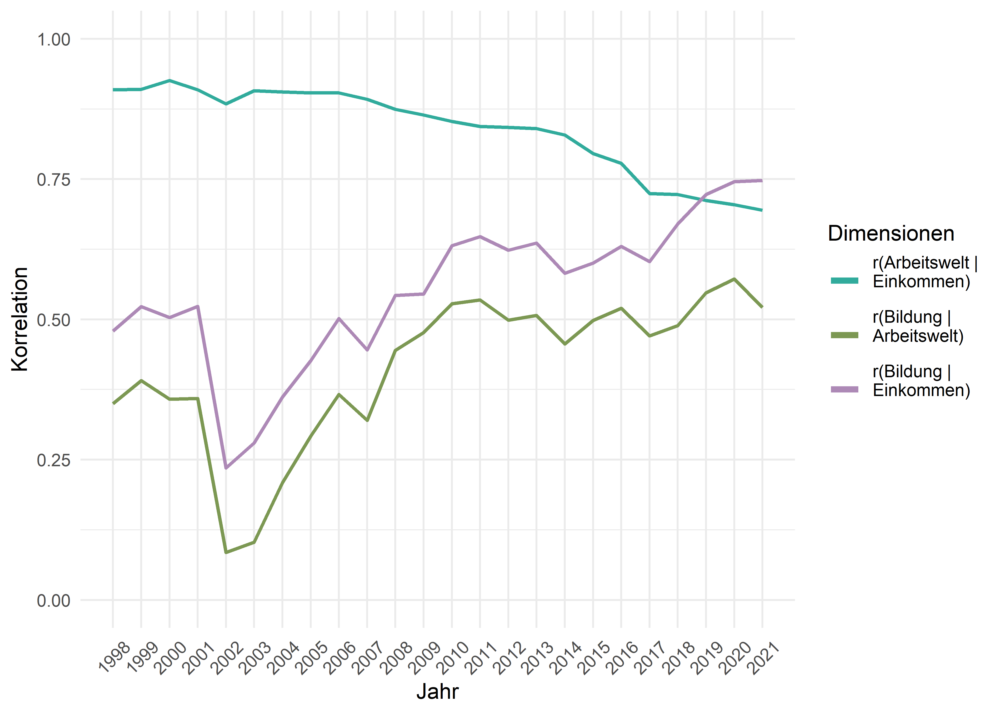
Figure 4: Jahresweise Korrelation der Teilscores zueinander
# Prediction der Scores
Results_krs <- Workfile_krs %>%
mutate(
# PCA Kreisebene
TS_Bildung_raw = predict(PCA_List[["TS_Bildung_Kreis"]], newdata = Workfile_krs),
TS_Arbeitswelt_raw = predict(PCA_List[["TS_Arbeitswelt_Kreis"]], newdata = Workfile_krs),
TS_Einkommen_raw = predict(PCA_List[["TS_Einkommen_Kreis"]], newdata = Workfile_krs)
) %>%
select(Kreiskennziffer, Jahr,
starts_with("TS_"),
Arbeitslosigkeit) %>%
# Attribute entfernen (Überbleibsel von der Prediction)
mutate(across(everything(), ~ {attributes(.) <- NULL; .}))
# Score-Variablen notieren
scorevars <- names(Results_krs)[3:(length(Results_krs) - 1)]
# Dimensionen so polen, dass sie positiv mit Arbeitslosigkeit korrelieren, um Deprivation abzubilden
# (= "wenn Korrelation negativ, dann multipliziere mit -1")
for (var in scorevars) {
if (cor(Results_krs$Arbeitslosigkeit, Results_krs[[var]]) < 0) {
Results_krs[[var]] <- Results_krs[[var]] * -1
}
}
# Jahresweise Korrelationen berechnen
cor_yearly_krs <- Results_krs %>%
group_by(Jahr) %>%
summarise("r(Bildung |\nArbeitswelt)\n" = cor(TS_Bildung_raw, TS_Arbeitswelt_raw),
"r(Bildung |\nEinkommen)\n" = cor(TS_Bildung_raw, TS_Einkommen_raw),
"r(Arbeitswelt |\nEinkommen)\n" = cor(TS_Arbeitswelt_raw, TS_Einkommen_raw)) %>%
# Long-Format für Plots
pivot_longer(cols = starts_with("r("),
names_to = "Dimensionen",
values_to = "Korrelation")
# Korrelationen plotten
ggplot(cor_yearly_krs,
aes(x = Jahr, y = Korrelation, group = Dimensionen, color = Dimensionen)) +
geom_line(linewidth = 0.8) +
ylim(0,1) +
plot_components +
scale_color_manual(values = c("#31AB9C",
"#7C9853",
"#AD89B6"))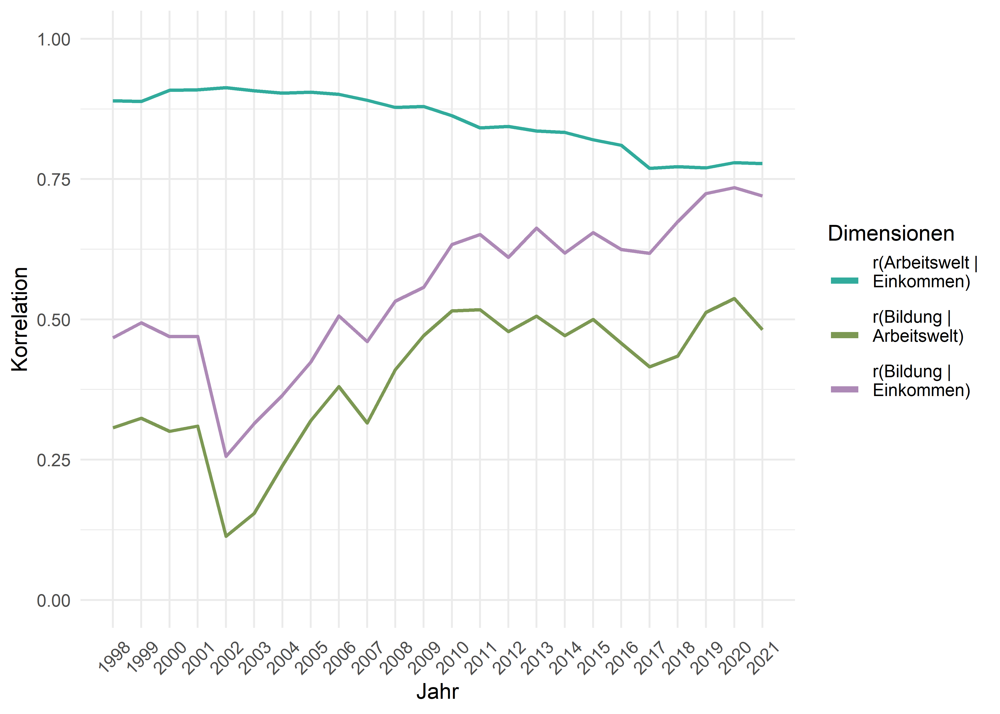
Figure 5: Jahresweise Korrelation der Teilscores zueinander (Aggregiert zu Kreisebene)
PCA informiert aus den letzten 20 Datenjahren (2001 - 2021). Normalisierung findet pro Datenjahr statt. Das heißt in jedem Jahr gibt es einen Minimalwert 0 und Maximalwert 1.
# Datensatz auf long reshapen
Scores_long_raw <- Results_raw %>%
select(Gemeindekennziffer, Jahr,
Bildung = TS_Bildung_raw,
Arbeitswelt = TS_Arbeitswelt_raw,
Einkommen = TS_Einkommen_raw) %>%
pivot_longer(cols = c(Bildung, Arbeitswelt, Einkommen),
names_to = "Dimension",
values_to = "Score") %>%
# "Reihenfolge" beim Facet-Wrapping erzwingen anhand von Ordinalskalierung
mutate(Dimension = as_factor(Dimension))
# Plotübergreifende Komponente
plot_components_density <- list(
facet_wrap(~ Dimension,
nrow = 2, ncol = 2,
scales = "free"),
ylab("Dichte"),
theme(legend.position = "none")
)
# Dichte plotten
ggplot(Scores_long_raw,
aes(x = Score, color = Dimension)) +
geom_density(linewidth = 0.8) +
plot_components_density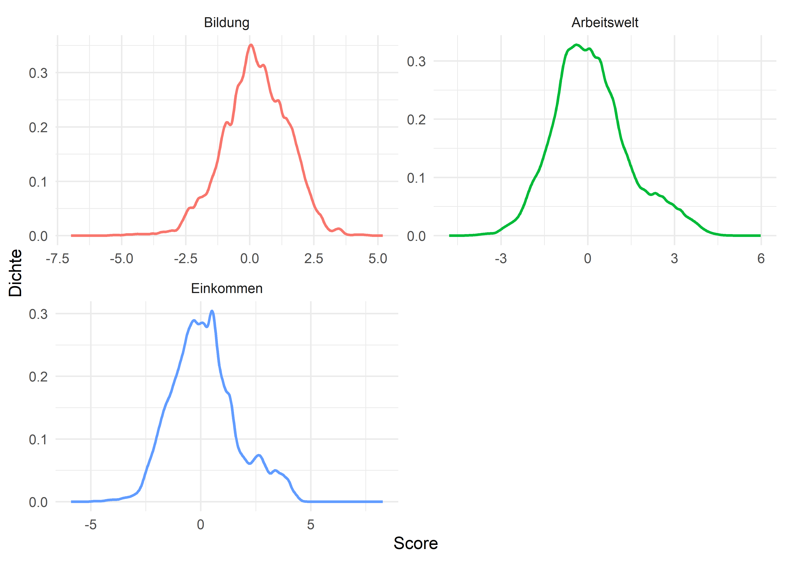
Figure 6: Verteilung der rohen Scores nach Faktorprediction
Results_nrm <- Results_raw %>%
group_by(Jahr) %>%
mutate(
# Teildimensionen normieren
TS_Bildung_nrm = rescale(TS_Bildung_raw),
TS_Arbeitswelt_nrm = rescale(TS_Arbeitswelt_raw),
TS_Einkommen_nrm = rescale(TS_Einkommen_raw),
# Zu Gesamtscore aufaddieren und noch mal jahresweise normieren
GISD_Score = rescale(TS_Bildung_nrm + TS_Arbeitswelt_nrm + TS_Einkommen_nrm),
GISD_Score = round(GISD_Score, digits=5)
) %>%
ungroup()
# Datensatz auf long reshapen
Scores_long_nrm <- Results_nrm %>%
select(Gemeindekennziffer, Jahr,
Bildung = TS_Bildung_nrm,
Arbeitswelt = TS_Arbeitswelt_nrm,
Einkommen = TS_Einkommen_nrm,
Gesamtscore = GISD_Score) %>%
pivot_longer(cols = c(Bildung, Arbeitswelt, Einkommen, Gesamtscore),
names_to = "Dimension",
values_to = "Score") %>%
# "Reihenfolge" beim Facet-Wrapping erzwingen anhand von Ordinalskalierung
mutate(Dimension = as_factor(Dimension))
# Dichte plotten
ggplot(Scores_long_nrm,
aes(x = Score, color = Dimension)) +
geom_density(linewidth = 0.8) +
scale_color_manual(values = c(hue_pal()(3), "grey25")) +
plot_components_density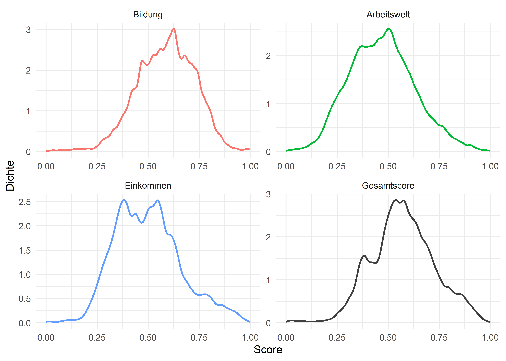
Figure 7: Verteilung der jahresweise normalisierten Scores
Die PCA wird hier nur durch das neueste Datenjahr informiert (aktuell 2021). Normalisierung findet pro Datenjahr statt. Das heißt in jedem Jahr gibt es einen Minimalwert 0 und Maximalwert 1.
# Datensatz auf long reshapen
Scores_long_l <- Results_raw %>%
select(Gemeindekennziffer, Jahr,
Bildung = TS_Bildung_l,
Arbeitswelt = TS_Arbeitswelt_l,
Einkommen = TS_Einkommen_l) %>%
pivot_longer(cols = c(Bildung, Arbeitswelt, Einkommen),
names_to = "Dimension",
values_to = "Score") %>%
# "Reihenfolge" beim Facet-Wrapping erzwingen anhand von Ordinalskalierung
mutate(Dimension = as_factor(Dimension))
# Dichte plotten
ggplot(Scores_long_l,
aes(x = Score, color = Dimension)) +
geom_density(linewidth = 0.8) +
plot_components_density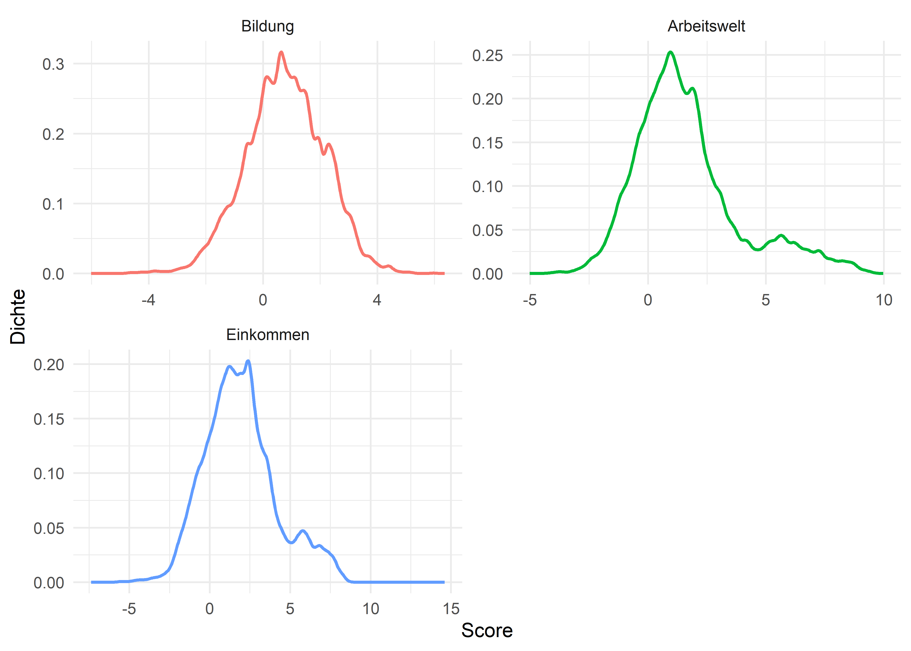
Figure 8: Verteilung der rohen Scores nach Faktorprediction (PCA aus letztem Datenjahr)
Results_nrm_l <- Results_raw %>%
group_by(Jahr) %>%
mutate(
# Teildimensionen normieren
TS_Bildung_nrm = rescale(TS_Bildung_l),
TS_Arbeitswelt_nrm = rescale(TS_Arbeitswelt_l),
TS_Einkommen_nrm = rescale(TS_Einkommen_l),
# Zu Gesamtscore aufaddieren und noch mal jahresweise normieren
GISD_Score = rescale(TS_Bildung_nrm + TS_Arbeitswelt_nrm + TS_Einkommen_nrm),
GISD_Score = round(GISD_Score, digits=5)
) %>%
ungroup()
# Datensatz auf long reshapen
Scores_long_nrm_l <- Results_nrm_l %>%
select(Gemeindekennziffer, Jahr,
Bildung = TS_Bildung_nrm,
Arbeitswelt = TS_Arbeitswelt_nrm,
Einkommen = TS_Einkommen_nrm,
Gesamtscore = GISD_Score) %>%
pivot_longer(cols = c(Bildung, Arbeitswelt, Einkommen, Gesamtscore),
names_to = "Dimension",
values_to = "Score") %>%
# "Reihenfolge" beim Facet-Wrapping erzwingen anhand von Ordinalskalierung
mutate(Dimension = as_factor(Dimension))
# Dichte plotten
ggplot(Scores_long_nrm_l,
aes(x = Score, color = Dimension)) +
geom_density(linewidth = 0.8) +
scale_color_manual(values = c(hue_pal()(3), "grey25")) +
plot_components_density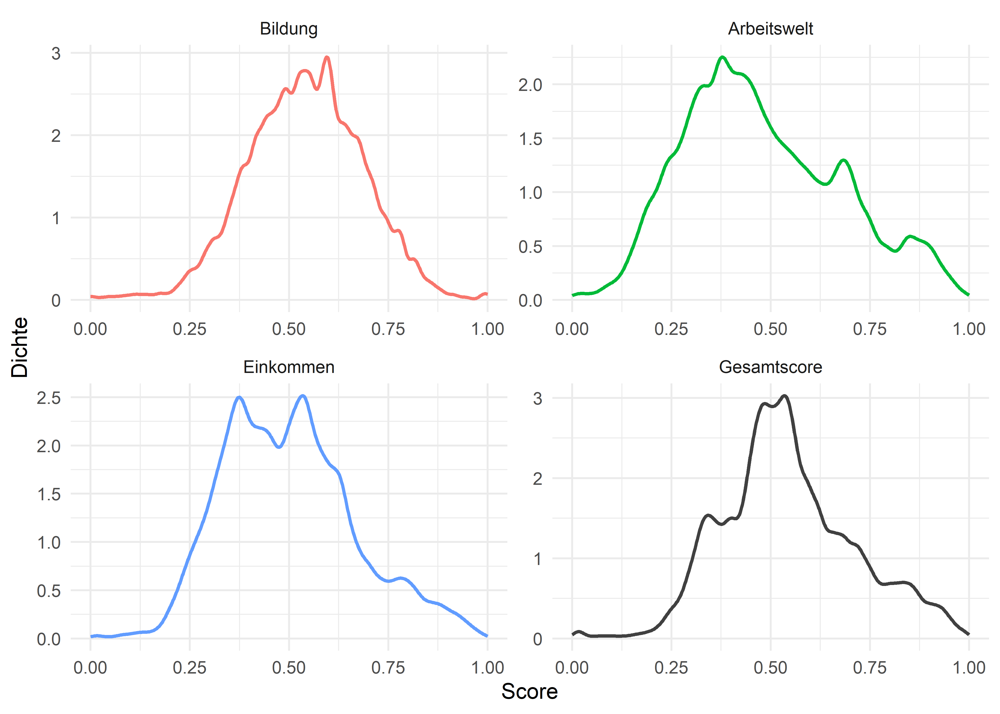
Figure 9: Verteilung der jahresweise normalisierten Scores (PCA aus letztem Datenjahr)